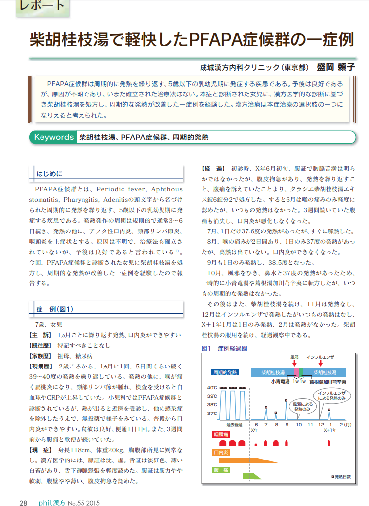
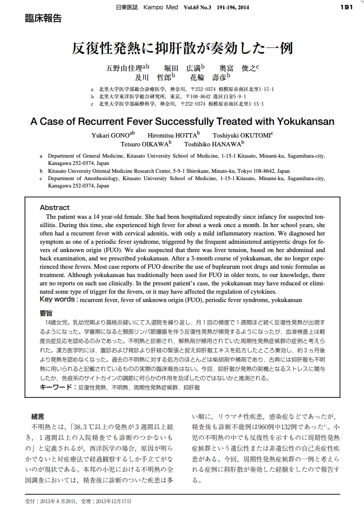
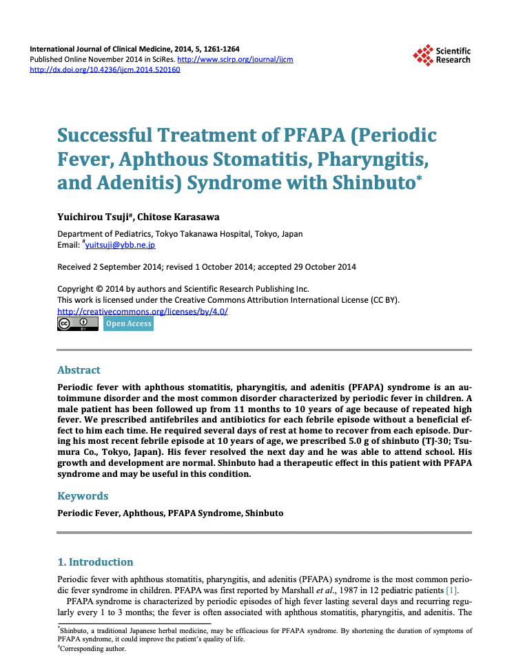
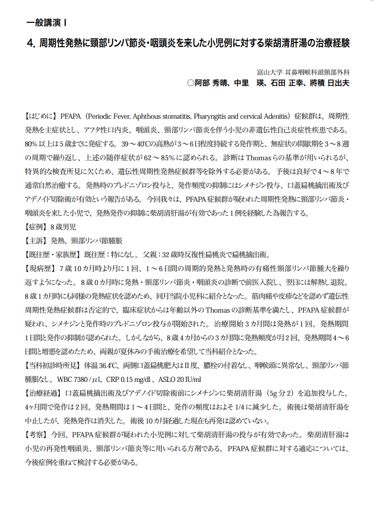

발열 기록과 기존 진료를 함께 검토합니다.
- 01기존 진단
- 02발열의 경과
- 03치료 상담
| 구분 | 살펴볼 점 | 알려주실 내용 |
|---|---|---|
| 반복 양상 | 발열 기간과 사이의 상태 | 날짜별 체온과 생활 기록 |
| 진료 자료 | 기존 진단·검사·치료 | 의료진에게 받은 설명과 자료 |
| 상담 준비 | 현재 상태와 진료 계획 | 복용 중인 약과 궁금한 점 |
궁금한 항목을 펼쳐보세요.
필요한 설명과 자료를 주제별로 확인할 수 있습니다.
01파파증후군에 대해＋
파파증후군에 대해
갑자기 40도전후의 고열이 나고 3-7일간 지속됩니다. 한달에 한번씩 아이가 병원신세를 지게되는 경우도 흔합니다.
02I 파파증후군 PFAPA Syndrome 에 접근합니다＋
파파증후군,
발열, 구강궤양, 인후염, 림프절부종이 주기적으로, 반복적으로 발병하는 증후군입니다.
비정상적인 면역체계반응으로 인해 발생하며 보통 소아에게 흔합니다.
갑자기 40도전후의 고열이 나고 3-7일간 지속됩니다.
한달에 한번씩 아이가 병원신세를 지게되는 경우도 흔합니다.
열이 났다가 사라지기를 반복하고 성인이 되기 전 사라집니다.
파파증후군, 정식명칭은
Periodic Fever, Pharyngitis, and Aphthous stomatitis (PFAPA) Syndrome입니다.
앞글자를 따서 파파증후군이라고 합니다.
양방에서는
치료방법이 명확하게 없으며
소아과에서는 스테로이드 치료, 편도절제술을 통해 개선하고자합니다.
소아 호흡기 질환에 대해 의료선진국에서는
파파증후군과 같은 잦은 상기도감염질환에 대해 한의학적으로 어떻게 바라보고 치료에 응용하고 있을까요?
해외의 의사가 보기에 상대적으로 서양의학에 비해 한의학적 치료가 가지는 장점은 무엇일까요?
해온한의원에서,
저희 의료진은 어떤식으로 진료를 하고 있을까요?
국내에는 몇몇 블로그, 논문자료가 있기는 한데
아직까지 본격적으로 다뤄지는 분야가 아닌지라
조금 더 잘 정리가 된 해외 사이트의 글들을 중심으로 편집해보았습니다.
(세다르 시나이병원, 메이요클리닉, 일본소아과 학술대회, 일본소아과학회학술집회(2014), GOTO COLLEGE OF MEDICAL ARTS AND SCIENCES 등)
I 파파증후군 PFAPA Syndrome 에 접근합니다
파파증후군의 양방 치료 다시 한번 복습하겠습니다.
양방적인 최상의 치료방법은 존재하지 않습니다만
가능한 치료법은 다음과 같습니다.
- 단기간의 스테로이드제 사용 - 이는 종종 증상을 단축시킵니다.
- 편도선을 제거하는 수술 - 일부 어린이들의 향후 재발률을 낮춥니다.
발열을 개선시키기 위해 해열제를 복용하는 것도 가능하지만 종종 아세트아미노펜(타이레놀)이나 이부프로펜과 같은 표준 해열제에 반응하지 않습니다.
스테로이드제는 치료기간을 단축시키기도하지만 재발 주기를 더 잦게 만들기도 하고 수면장애와 같은 부작용을 일으킵니다.
그렇다면
의료 선진국 중 하나인
일본 등지에서는
스레로이드 치료, 항생제의 잦은 사용을 피하기 위해
대안적으로 어떤 치료를 시행하고 있을까요?
해온한의원에서는 어떻게 진료하고 있을까요?
I 면역체계, 한의학적 치료
비정상적인 면역체계를 치료하기위한 시도는
예로부터 한방의 전문영역이었습니다.
아이들에게 한약은 상당히 안전하고 효과적인 경우가 많습니다.
해온한의원에서는
파파증후군과 같은 잦은 상기도감염이 나타나는 경우
'시호제' 라고 불리우는 소양병기에 해당하는 '한약처방'과
'보제'라고 불리우는 보약처방을 적극 활용중입니다.
시호청간탕, 소시호탕가미방, 시호계지탕 및 패독산류는
잦은 감기 및 파파증후군에 해당되는 아이들에게 자주 처방되고
효과도 굉장히 양호하다고 생각되는 처방입니다.
아이가 방문하면 가장 먼저 병력을 체크하고
적절한 진단검사를 시행합니다.
때때로 아이들이 상담 및 검사전에 지레 겁을 먹고 무서워하기도 하는데
막상 저와 간호쌤들을 만나면 의외로 순하게 검사도 받고 대화도 잘 나누고 그러다보니 한의원을 참 편해하더라구요.
저는 검사, 진단에 대한 상담을 하면서
아이의 원인에 대해 안내드리고
원인과 그 결과 나타나는 현상황에 대해 과학적인 견해 및 전통한의학적인 견해를 함께 안내해드립니다.
이른 바 통합적인 시각으로
부모님께서 편하게 선택하고 최선을 생각하시도록 안내드리는 것이죠.
치료계획은 처방계획 및 생활습관(가정에서 가능한 범위로)을 안내드립니다.
처방은 어떤 식으로 어떤 류의 처방을 중심으로 할 지 설명드리고
생활은 아이의 성격, 부모님의 여력이 되는 범주내로 식사, 활동, 휴식 등 다양한 측면에서 알려드리고 있습니다.
치료는 우선적으로 양방, 한방 모두 열린마음으로 받아들이시는 것이 전제입니다.
파파증후군은 아직 양방에서는 연구가 완료된 영역이 아닙니다.
하지만
한의학에서는 '잦은 감기, 폐기허, 폐음허, 폐열증' 등으로 굉장히 세분화되어 접근이 가능하며
치료도 체계적이고 효과적입니다.
다만 즉시형 증상(고열)은 양약의 도움이 필요한 경우도 있고
어떤 경우에는 꼭 필요하지 않은 경우도 있으며 이는 진료 상담을 통해 안내드리고 있습니다.
파파증후군에 대한 해외에서 활용되는 처방은 반복감염에 대한 처방과 상당히 유사합니다.
시호계지탕, 소시호탕, 시호청간탕 등이 임상적으로 유효할것으로 보고 되고 있습니다.
I 파파증후군, 한의학적 연구사례
시호계지탕에 대한 연구
아키바(秋葉)선생은
1년간 6회 이상 감기증상이 나타나는 환아 18례(남아 11례, 여아 7례), 연령은 11개월~ 10세 (평균 5.5세)에 대해 시호계지탕을 일 1포(또는 2포), 4~12개월간 복용시켰고
그 결과를 검토했습니다. (네, 맞습니다. 4-12개월 복용합니다. 원래 체질개선을 위한 한약은 장기복용이 원칙이랍니다. )
반복되는 감기증상이 투여기간 동안 나타나지 않는 경우를 '저효'
빈도가 감소된 경우 '유효'
변화가 없는 경우 '불변'
증상이 악화된 경우 '악화'로 검토한 결과
1. 저효 4례(22%)
2. 유효 12례(67%)
3. 불변 2례(11%)
4. 악화 0례(0%)
로 결과가 나왔습니다.
보호자의 문진표의 결과 발열 빈도의 감소, 식욕부진의 개선이 함께 나타났습니다.
코우(甲賀)선생은
연간 7회 이상의 상기도 감염을 반복하는 소아 26명에 대해 시호계지탕을 1년간 사용했는데 중지후 2년간을 관찰했고 그 유효성을 판정했습니다.
1년 한약 복용 후 기도감염이 1/2이하로 된 경우를 유효,
1년 한약 복용 후 기도감염이 1/3이하로 된 경우를 저효로 판정한 결과,
1. 저효(1/3이하) 23%
2. 유효(1/2이하) 57.7%
3. 불변 15.4%
4. 무효 3.8%
로 결과가 나왔습니다.
유효로 판정된 15례 중에는 시호계지탕 복용 중지 후 다시 상기도 감염에 자주 걸리는 경우가 4명 있었지만 사용전에 비해 현저하게 줄어든 결과였습니다.
또한 추적이 가능했던 16례에서는 감염 회복 1개월 후 ESR이 20mm/1h 을 넘기는 경우가 많았던 아이가 11례 있었지만 처방 복용 후 이런 경우가 사라졌습니다.
미네(峯)선생은
보육원에 통원하고 있는 1세(1개월~1세10개월)의 감염증이 반복되는 10례의 아이들에게
시호계지탕을 2-4개월 처방했고 약을 복용하기 전과 비교해
병원에 치료받이 위해 방문하는 횟수가
반수의 증례에서 1/2이하로
4례에서 1/3이하로 감소되었다고 보고했습니다.
시호계지탕 복용전의 증상은 다양했지만
상기도감염, 기관지염은 전체에서 나타났으며 이외에도 중이염, 바이러스성 위장염이 많았고(5명), 요로감염증(3명)이 있었습니다.
이런 연구를 통해 반복되는 상기도감염에 대해 시호계지탕의 장기투여가 유효하다는 것을 우리는 알 수 있습니다.
한약 처방 복용기간이 딱 정해진 것은 아니지만
보통 3-12개월로 효과가 보여지기때문에 그 범위 이내에서 아이의 상태를 보면서
의료진이 한약투여기간을 결정하면 된다고 생각합니다.
소시호탕에 대한 연구
시호계지탕은 이름에서 시호라는 말이 있듯,소시호탕과 계지탕이라는 한약이 함께 더해진 것입니다.
조금 더 기초적인 처방이며
소시호탕은 더 직접적이고 직설적인 처방이라고 생각하면 됩니다.
이와마(岩間)선생 등은
연간 5회이상, 또는 최근 2-6개월간 자주 상기도 감염을 일으키는 1-13세의 13례(남아 6례, 여아 7례, 평균연령은 5세7개월)에 대하여 소시호탕을 약 6개월간 투여했고
발열 횟수, 일반상태, 혈액검사 데이터를 검토했습니다.
그 결과
복약 2-3개월 후부터 개선되기 시작했고 10례에서는 감염이 줄어들었으며
발열빈도는 1/2~1/3으로 저하되었습니다.
식욕도 증가했고 안색이 좋아졌으며 활력을 되찾는 등 다양한 증상이 함께 개선되었습니다.
무료의 1례는 편도의 백태가 보여졌고 인플루엔자간균등이 검출되었고 CRP는 최고치를 나타냈습니다.
시호청간산에 대한 연구
시호청간산은 허약체질, 아토피 등을 치료하는 주요한 한약처방 중 하나입니다.
이런 처방도 반복적으로 나타나는 상기도 감염을 개선하기에 연구가 시행되었습니다.
이와마岩間선생등은
반복해서 편도염을 일으키는 소아 12례(2-8세, 남아 5례, 여아 7례)에 시호청간탕을 처방한 연구를 발표했습니다.
아이들의 편도는 중등도로 비대되었고 (대부분 맥켄지분류 Grade 2) 그 절반은 편도음와에 백태가 보였습니다.
이러한 환아에 대해 급성기가 지난 후
시호청간산을 처방했으며 약 1년간 연속 복용했습니다.
복용 1개월 후에는 8례가 발열했습니다만 2개월후 빈도가 떨어졌고
10례에서는 투여전 (2-5개월은 매월 발열이이 있었지만 연간 3회로 억제되었습니다)
2례는 치료에 반응하지 않았으며 그중 1례는 편도절제술을 시행했습니다.
이러한 보고는 시호청간산에도 소시호탕, 시호계지탕과 비슷한 효과가 있다고 볼 수 있습니다.
파파증후군에 대한 여러 한약처방 증례
야마구치(山口)선생은
반복되는 발열을 나타내고 PFAPA(파파증후군)으로 진단된 7명에 소시호탕합황기건중탕을 처방했고 투여초기부터 발열횟수, 기간이 급격하게 감소시킨 것으로 보고하고 있습니다.
황기건중탕은 보약의 일종으로
소시호탕과 함께 합방되면 효과가 배가될 것으로 판단하고 처방했습니다. 보약은 면역체계의 활성에 긍정적인 영향을 끼치기 때문에 더 빠른 효과가 나타나지 않았나 생각됩니다.
츠지선생 등은
파파증후군을 동반한 주기적 발열은 자가면역질환으로 보고
11개월부터 10세까지 추적관찰한 치료증례를 보고하기도 했습니다.
아이에게 유익한 효과가 없다는 것을 알면서도
발열이 있을 때마다 항생제와 해열제를 처방했으며 그럴때마다 집에서 수일동안 쉬어야했습니다.
반복 발열로 인해 가장 최근 진무탕이라는 한약을 처방했고
바로 다음날 바로 학교에 정상 등교할 수 있었고(아시다시피 파파증후군은 전염되지 않습니다)
1년간 발열이 없는 상태입니다.
아이의 성장과 발달이 정상이 되었습니다.
1년간 지속적으로 관찰했고
발열이 없다는 것으로 볼 때 관해가 우연하게 발생했을 가능성은 거의 없다고 보고 있으며
신중하게 후속조치를 취할 것이라고 했습니다.




위 연구들은
파파증후군의 치료에 현재 한약처방이 활발하게 응용되고 있음을 보여주고 있습니다.
저와 같이
호흡기질환, 소아질환을 자주 접하는 한의사에게
파파증후군이 어려운 존재는 아닙니다.
시호제(소시호탕, 시호계지탕, 시호청간탕 등)의 사용을 통해
면역체계가 정상화되는 데 도움을 줄 수 있다고 많은 전문가들은 평가합니다.
거기에 황기건중탕, 진무탕, 보중익기탕, 십전대보탕 등 보제가 함께 처방되는 것도 충분히 고려되는 것으로 생각합니다.
한약복용은 수개월에서 2년내외까지 지속한다면 소아의 반복성상기도감염을 예방하는 것은
아이들의 건강을 보호하고 사회적 손실을 감소시킬 수 있다고 보고 있습니다.
저는 조금 더 정밀하고 세밀한 처방을 통해
대부분의 반복감염아이들을 2-3개월의 한약 복용과 적절한 처치로 회복시키는 중입니다.
그리고 추적관찰을 합니다.
한번 제대로 회복을 한 경우 보통은 격렬한 재발은 거의 없습니다.
물론 발열이 도저히 잡히지 않아 편도절제술이 필요한 아이도 있기는 합니다만
증상이 전처럼 격렬하지는 않게됩니다.
오늘은 파파증후군의 한의학적 치료에 대해 안내해드렸습니다.
두서없이 좋은 내용들을 옮겨오고자 하는 마음에 글이 길어졌습니다.
아이와 진료 오기 전, 함께 챙겨주세요.
집에서 본 아이의 모습
가장 불편한 점과 시작한 때, 식사·잠·활동에서 달라진 모습을 알려주세요.
검진 기록과 복용약
가지고 있는 성장·검진 기록, 검사 결과와 약 이름을 챙겨주세요. 알레르기 이력도 함께 알려주세요.
아이도 궁금한 이야기
아이의 걱정과 보호자의 질문을 함께 나눠주세요. 이전 진료에서 어려웠던 경험도 좋습니다.
이 안내는 건강에 대한 이해를 돕는 참고 정보입니다. 증상과 질환에 대한 정확한 판단은 의료진의 진료가 필요합니다.